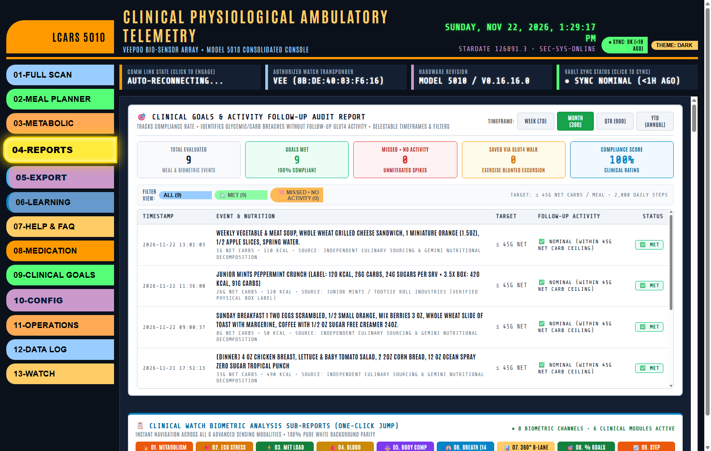

Monthly (30-Day) Retrospect: Audits 30-day glycemic variance, postprandial spike averages, dawn surge frequency, and overall Time-in-Range.
Daily (24-Hour) High-Resolution Curve: Inspects continuous 288-point curves showing exact meal spikes, exercise GLUT4 drops, and overnight nadir safety.
Patient-Directed Clinical Consultation: Submits verified YTD, monthly, and daily records formatted for clinical review and personal health records.

DOCTOR CONSULTATION DASHBOARD • 3-TIER AUDITYTD • MONTH • DAILY
1. YTD RECORD
eA1C 6.7%
Long-term trend from 8.8% • TIR 78.4%
2. MONTH (30-D)
138 MG/DL
Variance ±24 mg/dL • 0 Hypo events
3. DAILY (24-H)
288 PTS
Meal spikes & GLUT4 post-walk dips
Outpatient Consultation Synthesis
Enables the attending physician to correlate long-term medication efficacy (YTD) with recent habit shifts (Month) and immediate physiological responses (Daily).
EPIC EHR PERMANENT INTEGRATION
Transmits verified YTD, Month & Daily records into patient's chart.
Key Takeaway: Connecting YTD, monthly, and daily records gives your doctor the complete clinical picture for precise medical decisions.